# load the dataset https://hbiostat.org/data/
setwd("C:/Users/danfe/Dropbox/Proyectos Daniel/Cursos - diplomados - Maestrias/Programa de autoformación en investigación y análisis de datos/Rmarkdowns/Estadística/Programa de formación/Semana23 Metogos_G")
ObsData <- rio::import("rhc.csv")Métodos G - TMLE-SL
Importamos datos
Limpieza
# add column for outcome Y: length of stay
# Y = date of discharge - study admission date
# Y = date of death - study admission date if date of discharge not available
ObsData$Y <- ObsData$dschdte - ObsData$sadmdte
ObsData$Y[is.na(ObsData$Y)] <- ObsData$dthdte[is.na(ObsData$Y)] -
ObsData$sadmdte[is.na(ObsData$Y)]
# remove outcomes we are not examining in this example
ObsData <- dplyr::select(ObsData,
!c(dthdte, lstctdte, dschdte, death, t3d30, dth30, surv2md1))
# remove unnecessary and problematic variables
ObsData <- dplyr::select(ObsData,
!c(sadmdte, ptid, V1, adld3p, urin1, cat2))
# convert all categorical variables to factors
factors <- c("cat1", "ca", "cardiohx", "chfhx", "dementhx", "psychhx",
"chrpulhx", "renalhx", "liverhx", "gibledhx", "malighx",
"immunhx", "transhx", "amihx", "sex", "dnr1", "ninsclas",
"resp", "card", "neuro", "gastr", "renal", "meta", "hema",
"seps", "trauma", "ortho", "race", "income")
ObsData[factors] <- lapply(ObsData[factors], as.factor)
# convert our treatment A (RHC vs. No RHC) to a binary variable
ObsData$A <- ifelse(ObsData$swang1 == "RHC", 1, 0)
ObsData <- dplyr::select(ObsData, !swang1)
# Categorize the variables to match with the original paper
ObsData$age <- cut(ObsData$age,breaks=c(-Inf, 50, 60, 70, 80, Inf),right=FALSE)
ObsData$race <- factor(ObsData$race, levels=c("white","black","other"))
ObsData$sex <- as.factor(ObsData$sex)
ObsData$sex <- relevel(ObsData$sex, ref = "Male")
ObsData$cat1 <- as.factor(ObsData$cat1)
levels(ObsData$cat1) <- c("ARF","CHF","Other","Other","Other",
"Other","Other","MOSF","MOSF")
ObsData$ca <- as.factor(ObsData$ca)
levels(ObsData$ca) <- c("Metastatic","None","Localized (Yes)")
ObsData$ca <- factor(ObsData$ca, levels=c("None",
"Localized (Yes)","Metastatic"))
# Rename variables
names(ObsData) <- c("Disease.category", "Cancer", "Cardiovascular",
"Congestive.HF", "Dementia", "Psychiatric", "Pulmonary",
"Renal", "Hepatic", "GI.Bleed", "Tumor",
"Immunosupperssion", "Transfer.hx", "MI", "age", "sex",
"edu", "DASIndex", "APACHE.score", "Glasgow.Coma.Score",
"blood.pressure", "WBC", "Heart.rate", "Respiratory.rate",
"Temperature", "PaO2vs.FIO2", "Albumin", "Hematocrit",
"Bilirubin", "Creatinine", "Sodium", "Potassium", "PaCo2",
"PH", "Weight", "DNR.status", "Medical.insurance",
"Respiratory.Diag", "Cardiovascular.Diag",
"Neurological.Diag", "Gastrointestinal.Diag", "Renal.Diag",
"Metabolic.Diag", "Hematologic.Diag", "Sepsis.Diag",
"Trauma.Diag", "Orthopedic.Diag", "race", "income",
"Y", "A")
# saveRDS(ObsData, file = "rhcAnalytic.RDS")
ObsData2 <- ObsDataAnálisis
library(gtsummary)
set_gtsummary_theme(theme_gtsummary_compact()) Setting theme `Compact`
Setting theme `Compact`# theme to round percentages to one decimal place
set_gtsummary_theme(list(`tbl_summary-fn:percent_fun` = function(x) sprintf("%.1f", x * 100)))
# No permite setear lo siguiente pero se puede agregar manualmente
#`tbl_regression:estimate_fun` = function(x) style_number(x, digits = 2),
#`tbl_regression:pvalue_fun` = function(x) style_pvalue(x, digits = 3)))
# formato de digitos
library(magrittr)
style_percent_1digits <- purrr::partial(gtsummary::style_percent, digits = 1)
style_number_2digits <- purrr::partial(gtsummary::style_number, digits = 2)Descriptivo
tbl_summary(ObsData)| Characteristic | N = 5,7351 |
|---|---|
| Disease.category | |
| ARF | 2,490 (43.4%) |
| CHF | 456 (8.0%) |
| Other | 1,163 (20.3%) |
| MOSF | 1,626 (28.4%) |
| Cancer | |
| None | 4,379 (76.4%) |
| Localized (Yes) | 972 (16.9%) |
| Metastatic | 384 (6.7%) |
| Cardiovascular | |
| 0 | 4,722 (82.3%) |
| 1 | 1,013 (17.7%) |
| Congestive.HF | |
| 0 | 4,714 (82.2%) |
| 1 | 1,021 (17.8%) |
| Dementia | |
| 0 | 5,171 (90.2%) |
| 1 | 564 (9.8%) |
| Psychiatric | |
| 0 | 5,349 (93.3%) |
| 1 | 386 (6.7%) |
| Pulmonary | |
| 0 | 4,646 (81.0%) |
| 1 | 1,089 (19.0%) |
| Renal | |
| 0 | 5,480 (95.6%) |
| 1 | 255 (4.4%) |
| Hepatic | |
| 0 | 5,334 (93.0%) |
| 1 | 401 (7.0%) |
| GI.Bleed | |
| 0 | 5,550 (96.8%) |
| 1 | 185 (3.2%) |
| Tumor | |
| 0 | 4,419 (77.1%) |
| 1 | 1,316 (22.9%) |
| Immunosupperssion | |
| 0 | 4,192 (73.1%) |
| 1 | 1,543 (26.9%) |
| Transfer.hx | |
| 0 | 5,073 (88.5%) |
| 1 | 662 (11.5%) |
| MI | |
| 0 | 5,535 (96.5%) |
| 1 | 200 (3.5%) |
| age | |
| [-Inf,50) | 1,424 (24.8%) |
| [50,60) | 917 (16.0%) |
| [60,70) | 1,389 (24.2%) |
| [70,80) | 1,338 (23.3%) |
| [80, Inf) | 667 (11.6%) |
| sex | |
| Male | 3,192 (55.7%) |
| Female | 2,543 (44.3%) |
| edu | 12.0 (10.0, 13.0) |
| DASIndex | 19.7 (16.1, 23.4) |
| APACHE.score | 54 (41, 67) |
| Glasgow.Coma.Score | 0 (0, 41) |
| blood.pressure | 63 (50, 115) |
| WBC | 14 (8, 20) |
| Heart.rate | 124 (97, 141) |
| Respiratory.rate | 30 (14, 38) |
| Temperature | 38.09 (36.09, 39.00) |
| PaO2vs.FIO2 | 203 (133, 317) |
| Albumin | 3.50 (2.60, 3.50) |
| Hematocrit | 30 (26, 36) |
| Bilirubin | 1.01 (0.80, 1.40) |
| Creatinine | 1.50 (1.00, 2.40) |
| Sodium | 136 (132, 142) |
| Potassium | 3.80 (3.40, 4.60) |
| PaCo2 | 37 (31, 42) |
| PH | 7.40 (7.34, 7.46) |
| Weight | 70 (56, 84) |
| DNR.status | 654 (11.4%) |
| Medical.insurance | |
| Medicaid | 647 (11.3%) |
| Medicare | 1,458 (25.4%) |
| Medicare & Medicaid | 374 (6.5%) |
| No insurance | 322 (5.6%) |
| Private | 1,698 (29.6%) |
| Private & Medicare | 1,236 (21.6%) |
| Respiratory.Diag | 2,113 (36.8%) |
| Cardiovascular.Diag | 1,931 (33.7%) |
| Neurological.Diag | 693 (12.1%) |
| Gastrointestinal.Diag | 942 (16.4%) |
| Renal.Diag | 295 (5.1%) |
| Metabolic.Diag | 265 (4.6%) |
| Hematologic.Diag | 354 (6.2%) |
| Sepsis.Diag | 1,031 (18.0%) |
| Trauma.Diag | 52 (0.9%) |
| Orthopedic.Diag | 7 (0.1%) |
| race | |
| white | 4,460 (77.8%) |
| black | 920 (16.0%) |
| other | 355 (6.2%) |
| income | |
| $11-$25k | 1,165 (20.3%) |
| $25-$50k | 893 (15.6%) |
| > $50k | 451 (7.9%) |
| Under $11k | 3,226 (56.3%) |
| Y | 14 (7, 25) |
| A | 2,184 (38.1%) |
| 1 n (%); Median (IQR) | |
Crude analysis
# adjust the exposure variable (primary interest)
fit0 <- lm(Y~A, data = ObsData)
tbl_regression(fit0)| Characteristic | Beta | 95% CI1 | p-value |
|---|---|---|---|
| A | 5.3 | 4.0, 6.7 | <0.001 |
| 1 CI = Confidence Interval | |||
Adjusted analysis
# adjust the exposure variable (primary interest) + covariates
baselinevars <- names(dplyr::select(ObsData,
!c(A,Y)))
out.formula <- as.formula(paste("Y~ A +",
paste(baselinevars,
collapse = "+")))
fit1 <- lm(out.formula, data = ObsData)
tbl_regression(fit1,
include = c(A),
pvalue_fun = function(x) style_pvalue(x, digits = 3))| Characteristic | Beta | 95% CI1 | p-value |
|---|---|---|---|
| A | 2.9 | 1.4, 4.4 | <0.001 |
| 1 CI = Confidence Interval | |||
Evaluamos modelo
library(performance)
check_model(fit1)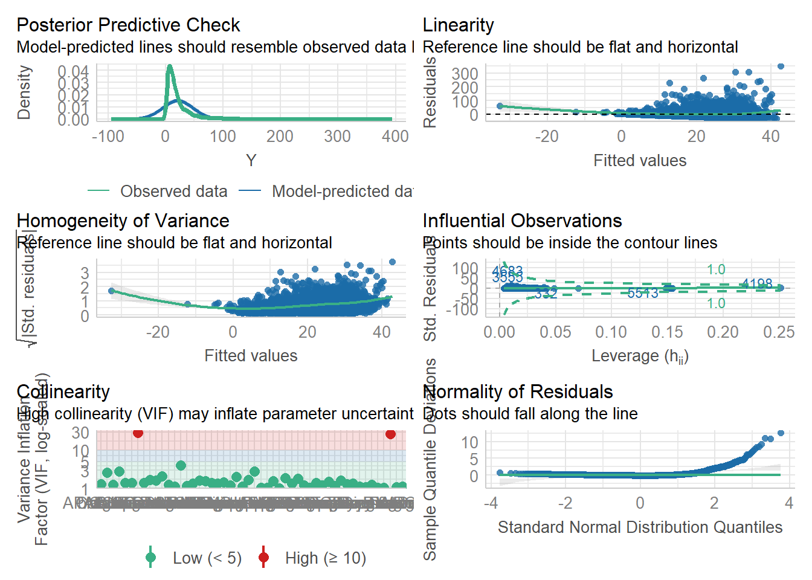
Propensity score matching
set.seed(111)
require(MatchIt)Cargando paquete requerido: MatchItps.formula <- as.formula(paste("A~",
paste(baselinevars, collapse = "+")))
PS.fit <- glm(ps.formula,family="binomial",
data=ObsData)
ObsData$PS <- predict(PS.fit,
newdata = ObsData, type="response")
logitPS <- -log(1/ObsData$PS - 1)
match.obj <- matchit(ps.formula, data =ObsData,
distance = ObsData$PS,
method = "nearest", replace=FALSE,
ratio = 1,
caliper = .2*sd(logitPS))Diagnosis
require(cobalt)Cargando paquete requerido: cobalt cobalt (Version 4.5.5, Build Date: 2024-04-02)
Adjuntando el paquete: 'cobalt'The following object is masked from 'package:MatchIt':
lalondebal.plot(match.obj,
var.name = "distance",
which = "both",
type = "histogram",
mirror = TRUE)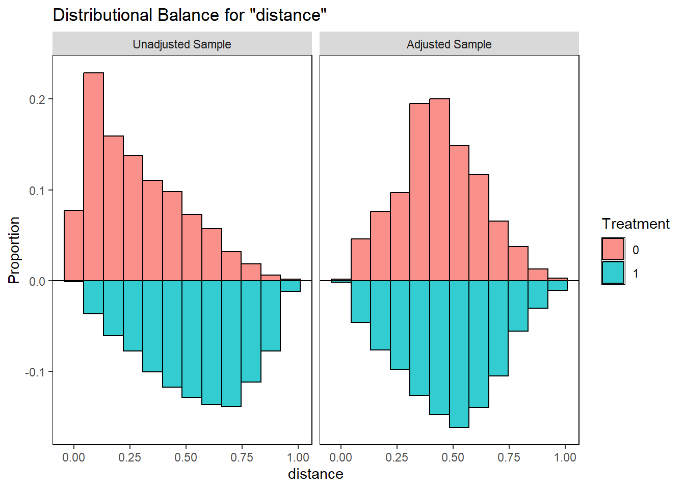
bal.tab(match.obj, un = TRUE,
thresholds = c(m = .1))Balance Measures
Type Diff.Un Diff.Adj M.Threshold
distance Distance 1.1558 0.1820
Disease.category_ARF Binary -0.0290 -0.0178 Balanced, <0.1
Disease.category_CHF Binary 0.0261 -0.0006 Balanced, <0.1
Disease.category_Other Binary -0.1737 -0.0092 Balanced, <0.1
Disease.category_MOSF Binary 0.1766 0.0276 Balanced, <0.1
Cancer_None Binary 0.0439 0.0075 Balanced, <0.1
Cancer_Localized (Yes) Binary -0.0267 -0.0109 Balanced, <0.1
Cancer_Metastatic Binary -0.0172 0.0035 Balanced, <0.1
Cardiovascular Binary 0.0445 -0.0104 Balanced, <0.1
Congestive.HF Binary 0.0268 0.0012 Balanced, <0.1
Dementia Binary -0.0472 -0.0023 Balanced, <0.1
Psychiatric Binary -0.0348 -0.0081 Balanced, <0.1
Pulmonary Binary -0.0737 -0.0138 Balanced, <0.1
Renal Binary 0.0066 -0.0058 Balanced, <0.1
Hepatic Binary -0.0124 -0.0023 Balanced, <0.1
GI.Bleed Binary -0.0122 -0.0006 Balanced, <0.1
Tumor Binary -0.0423 -0.0052 Balanced, <0.1
Immunosupperssion Binary 0.0358 -0.0046 Balanced, <0.1
Transfer.hx Binary 0.0554 0.0115 Balanced, <0.1
MI Binary 0.0139 -0.0012 Balanced, <0.1
age_[-Inf,50) Binary -0.0017 0.0063 Balanced, <0.1
age_[50,60) Binary 0.0161 0.0104 Balanced, <0.1
age_[60,70) Binary 0.0355 0.0006 Balanced, <0.1
age_[70,80) Binary 0.0144 -0.0132 Balanced, <0.1
age_[80, Inf) Binary -0.0643 -0.0040 Balanced, <0.1
sex_Female Binary -0.0462 -0.0092 Balanced, <0.1
edu Contin. 0.0910 0.0293 Balanced, <0.1
DASIndex Contin. 0.0654 0.0263 Balanced, <0.1
APACHE.score Contin. 0.4837 0.0813 Balanced, <0.1
Glasgow.Coma.Score Contin. -0.1160 -0.0147 Balanced, <0.1
blood.pressure Contin. -0.4869 -0.0680 Balanced, <0.1
WBC Contin. 0.0799 -0.0096 Balanced, <0.1
Heart.rate Contin. 0.1460 -0.0005 Balanced, <0.1
Respiratory.rate Contin. -0.1641 -0.0361 Balanced, <0.1
Temperature Contin. -0.0209 -0.0219 Balanced, <0.1
PaO2vs.FIO2 Contin. -0.4566 -0.0560 Balanced, <0.1
Albumin Contin. -0.2010 -0.0281 Balanced, <0.1
Hematocrit Contin. -0.2954 -0.0293 Balanced, <0.1
Bilirubin Contin. 0.1329 0.0319 Balanced, <0.1
Creatinine Contin. 0.2678 0.0339 Balanced, <0.1
Sodium Contin. -0.0927 -0.0218 Balanced, <0.1
Potassium Contin. -0.0274 0.0064 Balanced, <0.1
PaCo2 Contin. -0.2880 -0.0456 Balanced, <0.1
PH Contin. -0.1163 -0.0228 Balanced, <0.1
Weight Contin. 0.2640 0.0241 Balanced, <0.1
DNR.status_Yes Binary -0.0696 0.0006 Balanced, <0.1
Medical.insurance_Medicaid Binary -0.0395 -0.0035 Balanced, <0.1
Medical.insurance_Medicare Binary -0.0327 -0.0075 Balanced, <0.1
Medical.insurance_Medicare & Medicaid Binary -0.0144 -0.0058 Balanced, <0.1
Medical.insurance_No insurance Binary 0.0099 0.0046 Balanced, <0.1
Medical.insurance_Private Binary 0.0624 0.0259 Balanced, <0.1
Medical.insurance_Private & Medicare Binary 0.0143 -0.0138 Balanced, <0.1
Respiratory.Diag_Yes Binary -0.1277 -0.0299 Balanced, <0.1
Cardiovascular.Diag_Yes Binary 0.1395 0.0236 Balanced, <0.1
Neurological.Diag_Yes Binary -0.1079 -0.0098 Balanced, <0.1
Gastrointestinal.Diag_Yes Binary 0.0453 0.0052 Balanced, <0.1
Renal.Diag_Yes Binary 0.0264 0.0040 Balanced, <0.1
Metabolic.Diag_Yes Binary -0.0059 0.0017 Balanced, <0.1
Hematologic.Diag_Yes Binary -0.0146 -0.0035 Balanced, <0.1
Sepsis.Diag_Yes Binary 0.0912 0.0138 Balanced, <0.1
Trauma.Diag_Yes Binary 0.0105 0.0017 Balanced, <0.1
Orthopedic.Diag_Yes Binary 0.0010 0.0012 Balanced, <0.1
race_white Binary 0.0063 0.0069 Balanced, <0.1
race_black Binary -0.0114 -0.0081 Balanced, <0.1
race_other Binary 0.0050 0.0012 Balanced, <0.1
income_$11-$25k Binary 0.0062 -0.0104 Balanced, <0.1
income_$25-$50k Binary 0.0391 0.0173 Balanced, <0.1
income_> $50k Binary 0.0165 0.0086 Balanced, <0.1
income_Under $11k Binary -0.0618 -0.0155 Balanced, <0.1
Balance tally for mean differences
count
Balanced, <0.1 68
Not Balanced, >0.1 0
Variable with the greatest mean difference
Variable Diff.Adj M.Threshold
APACHE.score 0.0813 Balanced, <0.1
Sample sizes
Control Treated
All 3551 2184
Matched 1739 1739
Unmatched 1812 445love.plot(match.obj, binary = "std",
thresholds = c(m = .1)) 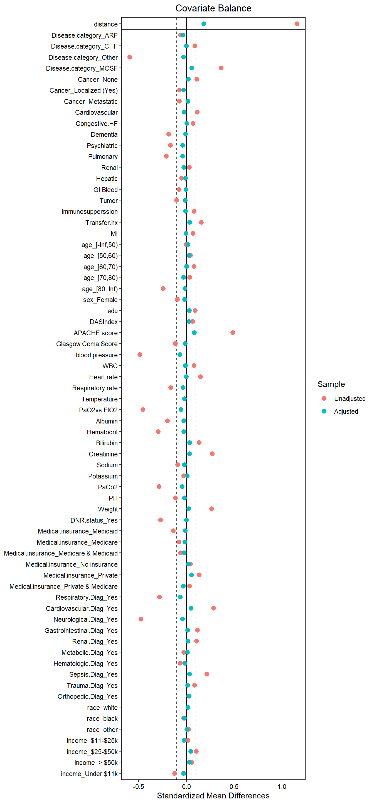
The love plot suggests satisfactory propensity score matching (all SMD < 0.1).
PSM result
matched.data <- match.data(match.obj)
fit.matched <- lm(Y~A, matched.data)
tbl_regression(fit.matched )| Characteristic | Beta | 95% CI1 | p-value |
|---|---|---|---|
| A | 3.3 | 1.4, 5.1 | <0.001 |
| 1 CI = Confidence Interval | |||
G-computation
ObsData <- ObsData2
dim(ObsData)[1] 5735 51Recuerda G computation utiliza framework de resultados potenciales
| Subject / | Sex / | RHC status (A) / | Y when A=1 (RHC) / | Y when A=0 (no RHC) / | Treatment Effect |
|---|---|---|---|---|---|
| John | Male | 0 | NA | 9 | NA |
| Emma | Female | 1 | 45 | NA | NA |
| Isabella | Female | 1 | 60 | NA | NA |
| Sophia | Female | 0 | NA | 37 | NA |
| Luke | Male | 1 | 2 | NA | NA |
| Mia | Female | 0 | NA | 7 | NA |
| NA | NA | NA | 36 | 18 | 18 |
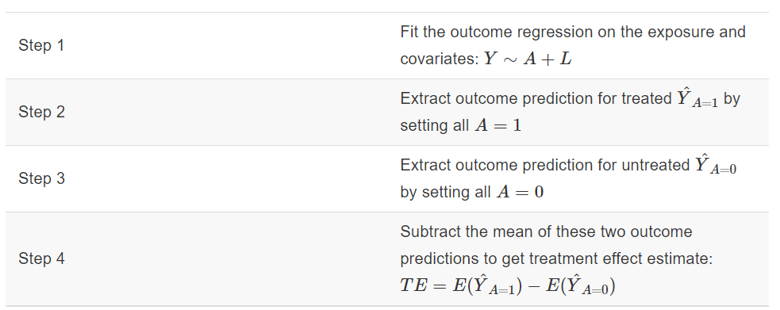
Paso 1: Modelar Y~A + covariables
summary(fit1)[1]$call
lm(formula = out.formula, data = ObsData)out.formulaY ~ A + Disease.category + Cancer + Cardiovascular + Congestive.HF +
Dementia + Psychiatric + Pulmonary + Renal + Hepatic + GI.Bleed +
Tumor + Immunosupperssion + Transfer.hx + MI + age + sex +
edu + DASIndex + APACHE.score + Glasgow.Coma.Score + blood.pressure +
WBC + Heart.rate + Respiratory.rate + Temperature + PaO2vs.FIO2 +
Albumin + Hematocrit + Bilirubin + Creatinine + Sodium +
Potassium + PaCo2 + PH + Weight + DNR.status + Medical.insurance +
Respiratory.Diag + Cardiovascular.Diag + Neurological.Diag +
Gastrointestinal.Diag + Renal.Diag + Metabolic.Diag + Hematologic.Diag +
Sepsis.Diag + Trauma.Diag + Orthopedic.Diag + race + incometbl_regression(fit1,
include = c(A),
pvalue_fun = function(x) style_pvalue(x, digits = 3))| Characteristic | Beta | 95% CI1 | p-value |
|---|---|---|---|
| A | 2.9 | 1.4, 4.4 | <0.001 |
| 1 CI = Confidence Interval | |||
Paso 2: Predict outcome for treated (Y | x = 1)
ObsData$Pred.Y1 <- predict(fit1,
newdata = data.frame(A = 1,
dplyr::select(ObsData, !A)),
type = "response")Paso 3: Predict outcome for non treated (Y | x = 0)
ObsData$Pred.Y0 <- predict(fit1,
newdata = data.frame(A = 0,
dplyr::select(ObsData, !A)),
type = "response")Paso 4: calcular el ATE
mean(ObsData$Pred.Y1)[1] 23.35625mean(ObsData$Pred.Y0)[1] 20.45422ObsData$Pred.TE <- ObsData$Pred.Y1 - ObsData$Pred.Y0
TE <- mean(ObsData$Pred.TE)
TE[1] 2.90203sd(ObsData$Pred.TE)[1] 5.703365e-15hist(ObsData$Pred.Y1,
main = "Histogram for predicted outcome for treated",
xlab = "Y(A=1)")
abline(v=mean(ObsData$Pred.Y1),col="blue", lwd = 4)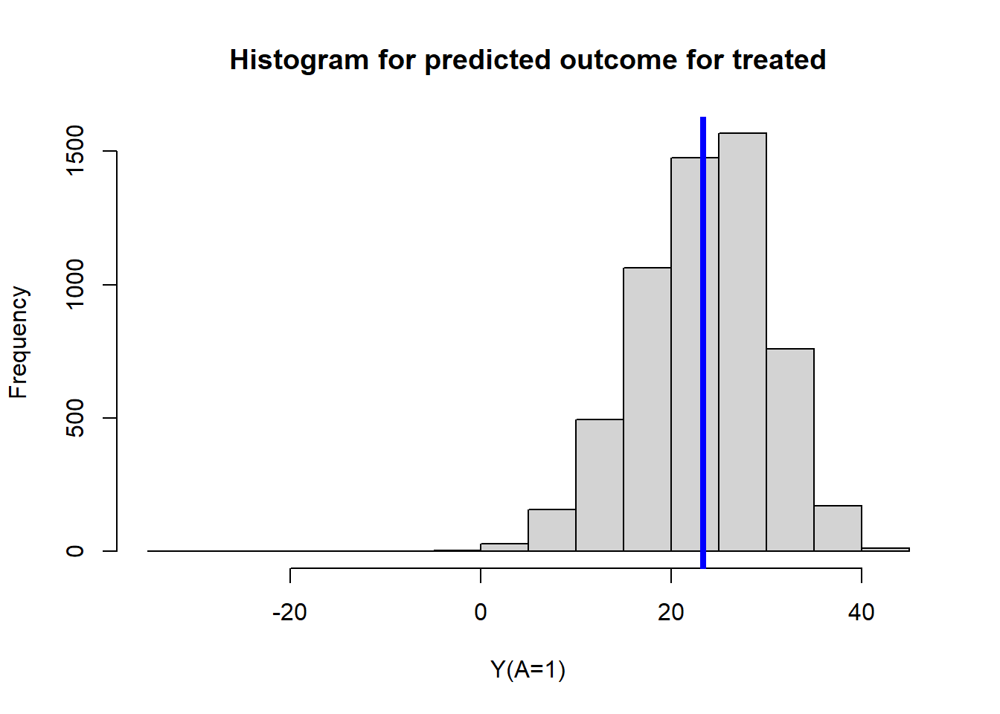
hist(ObsData$Pred.Y0,
main = "Histogram for predicted outcome for untreated",
xlab = "Y(A=0)")
abline(v=mean(ObsData$Pred.Y0),col="blue", lwd = 4)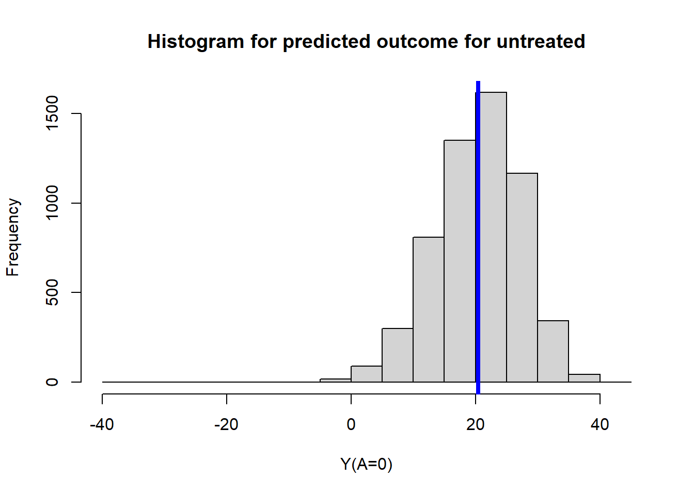
hist(ObsData$Pred.TE,
main = "Histogram for predicted treatment effect",
xlab = "Y(A=1) - Y(A=0)")
abline(v=mean(ObsData$Pred.TE),col="blue", lwd = 4)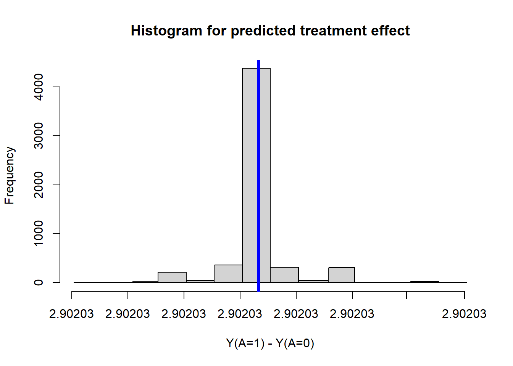
small.data1 <- ObsData[1:6,c("A","Pred.Y1","Pred.Y0")]
small.data1$id <- c("John","Emma","Isabella","Sophia","Luke", "Mia")
small.data1 <- small.data1[c("id", "A","Pred.Y1","Pred.Y0")]
small.data01 <- small.data1
small.data01$Pred.Y0 <- small.data1$Pred.Y0
small.data01$Pred.TE <- small.data01$Pred.Y1 - small.data01$Pred.Y0
m.Y1 <- mean(small.data01$Pred.Y1)
m.Y0 <- mean(small.data01$Pred.Y0)
mean.values <- round(c(NA,NA, m.Y1, m.Y0, m.Y1 -m.Y0),1)
small.data2 <- rbind(small.data01, mean.values)
kable(small.data2, booktabs = TRUE, digits=1,
col.names = c("id","RHC status (A)",
"Y.hat when A=1 (RHC)",
"Y.hat when A=0 (no RHC)",
"Treatment Effect"))%>%
row_spec(7, bold = TRUE, color = "white", background = "#D7261E")| id | RHC status (A) | Y.hat when A=1 (RHC) | Y.hat when A=0 (no RHC) | Treatment Effect |
|---|---|---|---|---|
| John | 0 | 17.5 | 14.6 | 2.9 |
| Emma | 1 | 28.7 | 25.8 | 2.9 |
| Isabella | 1 | 24.6 | 21.7 | 2.9 |
| Sophia | 0 | 21.6 | 18.7 | 2.9 |
| Luke | 1 | 13.6 | 10.7 | 2.9 |
| Mia | 0 | 25.5 | 22.6 | 2.9 |
| NA | NA | 21.9 | 19.0 | 2.9 |
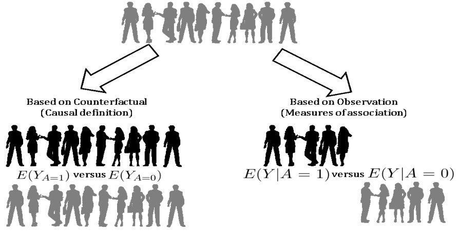
Paso 5: Estimating the confidence intervals
Para las estimaciones de intervalos de confianza para el cálculo de G, es necesario utilizar bootstrap.
require(boot)Cargando paquete requerido: bootgcomp.boot <- function(formula = out.formula, data = ObsData, indices) {
boot_sample <- data[indices, ]
fit.boot <- lm(formula, data = boot_sample)
Pred.Y1 <- predict(fit.boot,
newdata = data.frame(A = 1,
dplyr::select(boot_sample, !A)),
type = "response")
Pred.Y0 <- predict(fit.boot,
newdata = data.frame(A = 0,
dplyr::select(boot_sample, !A)),
type = "response")
Pred.TE <- mean(Pred.Y1) - mean(Pred.Y0)
return(Pred.TE)
}
set.seed(123)
gcomp.res <- boot(data=ObsData,
statistic=gcomp.boot,
R=250,
formula=out.formula)plot(gcomp.res) 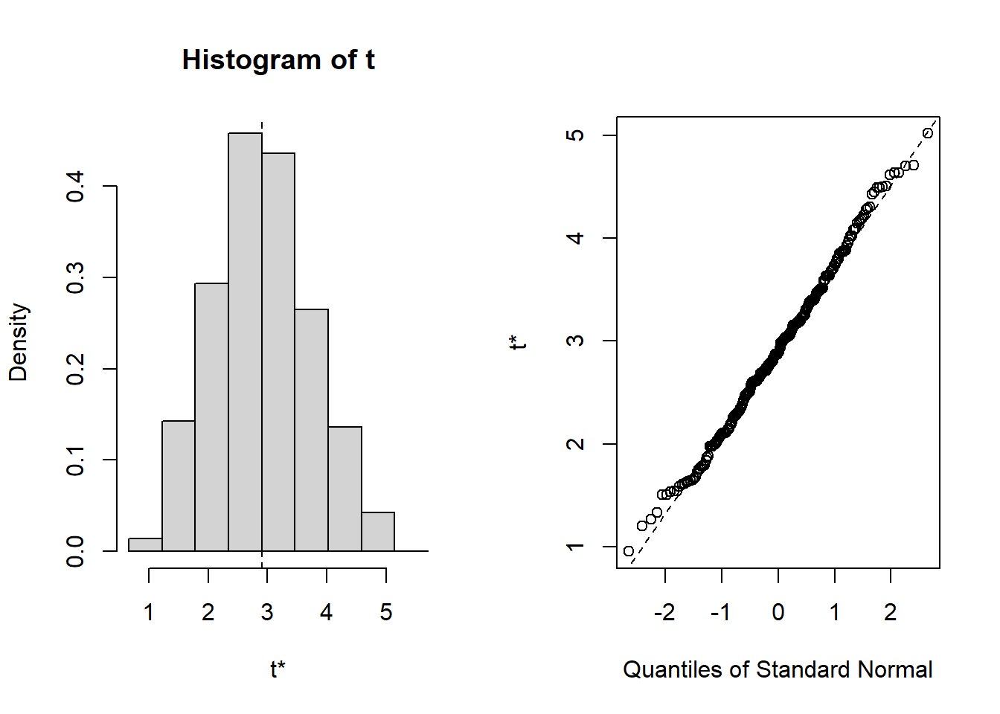
A continuación se presentan dos versiones del intervalo de confianza.
Una se basa en el supuesto de normalidad: estimación puntual - y + con 1,96 multiplicado por la estimación de la DE Otra se basa en percentiles
CI1 <- boot.ci(gcomp.res, type="norm")
CI1BOOTSTRAP CONFIDENCE INTERVAL CALCULATIONS
Based on 250 bootstrap replicates
CALL :
boot.ci(boot.out = gcomp.res, type = "norm")
Intervals :
Level Normal
95% ( 1.315, 4.444 )
Calculations and Intervals on Original ScaleCI2 <- boot.ci(gcomp.res, type="perc")
CI2BOOTSTRAP CONFIDENCE INTERVAL CALCULATIONS
Based on 250 bootstrap replicates
CALL :
boot.ci(boot.out = gcomp.res, type = "perc")
Intervals :
Level Percentile
95% ( 1.515, 4.589 )
Calculations and Intervals on Original Scale
Some percentile intervals may be unstableIPTW
Ahora nos interesa sobre todo la modelización de la exposición (por ejemplo, corregir primero el desequilibrio, antes de hacer el análisis de resultados).
ObsData <- readRDS(file = "rhcAnalytic.RDS")
baselinevars <- names(dplyr::select(ObsData, !c(A,Y)))steps
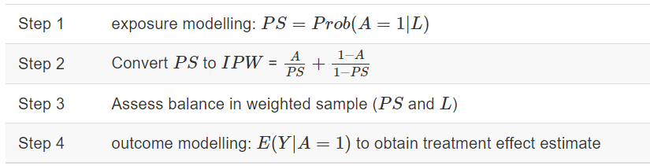
Step 1: exposure modelling
ps.formula <- as.formula(paste("A ~",
paste(baselinevars,
collapse = "+")))
ps.formulaA ~ Disease.category + Cancer + Cardiovascular + Congestive.HF +
Dementia + Psychiatric + Pulmonary + Renal + Hepatic + GI.Bleed +
Tumor + Immunosupperssion + Transfer.hx + MI + age + sex +
edu + DASIndex + APACHE.score + Glasgow.Coma.Score + blood.pressure +
WBC + Heart.rate + Respiratory.rate + Temperature + PaO2vs.FIO2 +
Albumin + Hematocrit + Bilirubin + Creatinine + Sodium +
Potassium + PaCo2 + PH + Weight + DNR.status + Medical.insurance +
Respiratory.Diag + Cardiovascular.Diag + Neurological.Diag +
Gastrointestinal.Diag + Renal.Diag + Metabolic.Diag + Hematologic.Diag +
Sepsis.Diag + Trauma.Diag + Orthopedic.Diag + race + incomeAdemás de los términos de efecto principal, ¿qué otras especificaciones de modelo son posibles?
Términos comunes para agregar (de hecho, basados en plausibilidad biológica; que requieren conocimiento del área temática)
Interacciones
polinomios o splines
transformaciones
Ajuste de regresión logística para estimar puntuaciones de propensión
PS.fit <- glm(ps.formula, family="binomial", data=ObsData)
tbl_regression(PS.fit, exp=TRUE,
pvalue_fun = function(x) style_pvalue(x, digits = 3))| Characteristic | OR1 | 95% CI1 | p-value |
|---|---|---|---|
| Disease.category | |||
| ARF | — | — | |
| CHF | 1.79 | 1.32, 2.43 | <0.001 |
| Other | 0.54 | 0.43, 0.68 | <0.001 |
| MOSF | 1.58 | 1.34, 1.87 | <0.001 |
| Cancer | |||
| None | — | — | |
| Localized (Yes) | 0.46 | 0.21, 0.94 | 0.039 |
| Metastatic | 0.37 | 0.16, 0.80 | 0.013 |
| Cardiovascular | |||
| 0 | — | — | |
| 1 | 1.04 | 0.86, 1.25 | 0.704 |
| Congestive.HF | |||
| 0 | — | — | |
| 1 | 1.10 | 0.90, 1.35 | 0.346 |
| Dementia | |||
| 0 | — | — | |
| 1 | 0.67 | 0.53, 0.85 | 0.001 |
| Psychiatric | |||
| 0 | — | — | |
| 1 | 0.65 | 0.49, 0.85 | 0.002 |
| Pulmonary | |||
| 0 | — | — | |
| 1 | 0.97 | 0.81, 1.18 | 0.781 |
| Renal | |||
| 0 | — | — | |
| 1 | 0.70 | 0.49, 1.00 | 0.052 |
| Hepatic | |||
| 0 | — | — | |
| 1 | 0.79 | 0.57, 1.11 | 0.182 |
| GI.Bleed | |||
| 0 | — | — | |
| 1 | 0.76 | 0.49, 1.17 | 0.215 |
| Tumor | |||
| 0 | — | — | |
| 1 | 1.48 | 0.72, 3.20 | 0.299 |
| Immunosupperssion | |||
| 0 | — | — | |
| 1 | 1.00 | 0.86, 1.15 | 0.978 |
| Transfer.hx | |||
| 0 | — | — | |
| 1 | 1.46 | 1.20, 1.77 | <0.001 |
| MI | |||
| 0 | — | — | |
| 1 | 1.12 | 0.80, 1.59 | 0.503 |
| age | |||
| [-Inf,50) | — | — | |
| [50,60) | 1.04 | 0.85, 1.27 | 0.733 |
| [60,70) | 1.22 | 1.00, 1.49 | 0.056 |
| [70,80) | 1.15 | 0.91, 1.45 | 0.241 |
| [80, Inf) | 0.66 | 0.49, 0.88 | 0.005 |
| sex | |||
| Male | — | — | |
| Female | 0.98 | 0.86, 1.12 | 0.766 |
| edu | 1.03 | 1.01, 1.05 | 0.010 |
| DASIndex | 1.00 | 0.98, 1.01 | 0.664 |
| APACHE.score | 1.01 | 1.01, 1.02 | <0.001 |
| Glasgow.Coma.Score | 1.00 | 1.00, 1.00 | 0.285 |
| blood.pressure | 0.99 | 0.99, 1.0 | <0.001 |
| WBC | 1.00 | 0.99, 1.00 | 0.737 |
| Heart.rate | 1.00 | 1.00, 1.01 | <0.001 |
| Respiratory.rate | 0.98 | 0.97, 0.98 | <0.001 |
| Temperature | 0.97 | 0.93, 1.01 | 0.126 |
| PaO2vs.FIO2 | 1.0 | 0.99, 1.00 | <0.001 |
| Albumin | 0.93 | 0.85, 1.01 | 0.103 |
| Hematocrit | 0.99 | 0.98, 1.00 | 0.010 |
| Bilirubin | 1.01 | 1.00, 1.02 | 0.172 |
| Creatinine | 1.04 | 1.00, 1.09 | 0.058 |
| Sodium | 0.99 | 0.98, 1.00 | 0.005 |
| Potassium | 0.85 | 0.79, 0.91 | <0.001 |
| PaCo2 | 0.98 | 0.97, 0.98 | <0.001 |
| PH | 0.22 | 0.10, 0.47 | <0.001 |
| Weight | 1.01 | 1.00, 1.01 | <0.001 |
| DNR.status | |||
| No | — | — | |
| Yes | 0.58 | 0.46, 0.73 | <0.001 |
| Medical.insurance | |||
| Medicaid | — | — | |
| Medicare | 1.34 | 1.03, 1.74 | 0.032 |
| Medicare & Medicaid | 1.49 | 1.07, 2.07 | 0.018 |
| No insurance | 1.66 | 1.20, 2.30 | 0.002 |
| Private | 1.55 | 1.21, 1.97 | <0.001 |
| Private & Medicare | 1.46 | 1.11, 1.92 | 0.007 |
| Respiratory.Diag | |||
| No | — | — | |
| Yes | 0.76 | 0.65, 0.90 | 0.001 |
| Cardiovascular.Diag | |||
| No | — | — | |
| Yes | 1.80 | 1.52, 2.13 | <0.001 |
| Neurological.Diag | |||
| No | — | — | |
| Yes | 0.62 | 0.47, 0.80 | <0.001 |
| Gastrointestinal.Diag | |||
| No | — | — | |
| Yes | 1.41 | 1.15, 1.73 | 0.001 |
| Renal.Diag | |||
| No | — | — | |
| Yes | 1.35 | 1.01, 1.80 | 0.046 |
| Metabolic.Diag | |||
| No | — | — | |
| Yes | 0.85 | 0.62, 1.15 | 0.295 |
| Hematologic.Diag | |||
| No | — | — | |
| Yes | 0.59 | 0.45, 0.78 | <0.001 |
| Sepsis.Diag | |||
| No | — | — | |
| Yes | 1.31 | 1.10, 1.57 | 0.003 |
| Trauma.Diag | |||
| No | — | — | |
| Yes | 3.45 | 1.82, 6.76 | <0.001 |
| Orthopedic.Diag | |||
| No | — | — | |
| Yes | 3.74 | 0.56, 28.2 | 0.184 |
| race | |||
| white | — | — | |
| black | 1.05 | 0.87, 1.26 | 0.625 |
| other | 1.09 | 0.84, 1.41 | 0.527 |
| income | |||
| $11-$25k | — | — | |
| $25-$50k | 1.08 | 0.87, 1.34 | 0.464 |
| > $50k | 1.02 | 0.78, 1.34 | 0.881 |
| Under $11k | 1.06 | 0.90, 1.26 | 0.480 |
| 1 OR = Odds Ratio, CI = Confidence Interval | |||
El coeficiente de ajuste del modelo PS no es motivo de preocupación.
El modelo puede ser rico: en la medida en que la predicción sea mejor
Pero busque problemas de multicolinealidad.
- ¿SE demasiado alto?
Obtener los valores de la puntuación de propensión (PS) del ajuste
ObsData$PS <- predict(PS.fit, type="response")Revisar resúmenes:
¿Suficiente superposición?
¿Valores de PS muy cercanos a 0 o 1?
summary(ObsData$PS) Min. 1st Qu. Median Mean 3rd Qu. Max.
0.002478 0.161446 0.358300 0.380819 0.574319 0.968425 plot(density(ObsData$PS))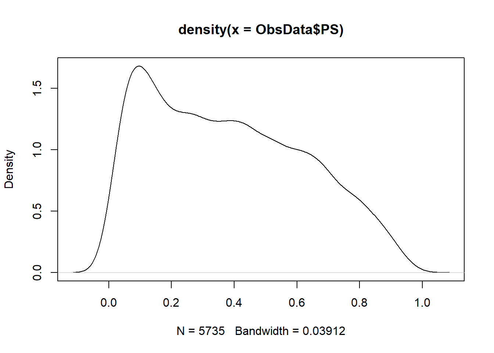
tapply(ObsData$PS, ObsData$A, summary)$`0`
Min. 1st Qu. Median Mean 3rd Qu. Max.
0.002478 0.106718 0.241301 0.283816 0.427138 0.951927
$`1`
Min. 1st Qu. Median Mean 3rd Qu. Max.
0.01575 0.37205 0.55243 0.53854 0.70999 0.96842 plot(density(ObsData$PS[ObsData$A==0]),
col = "red", main = "")
lines(density(ObsData$PS[ObsData$A==1]),
col = "blue", lty = 2)
legend("topright", c("No RHC","RHC"),
col = c("red", "blue"), lty=1:2)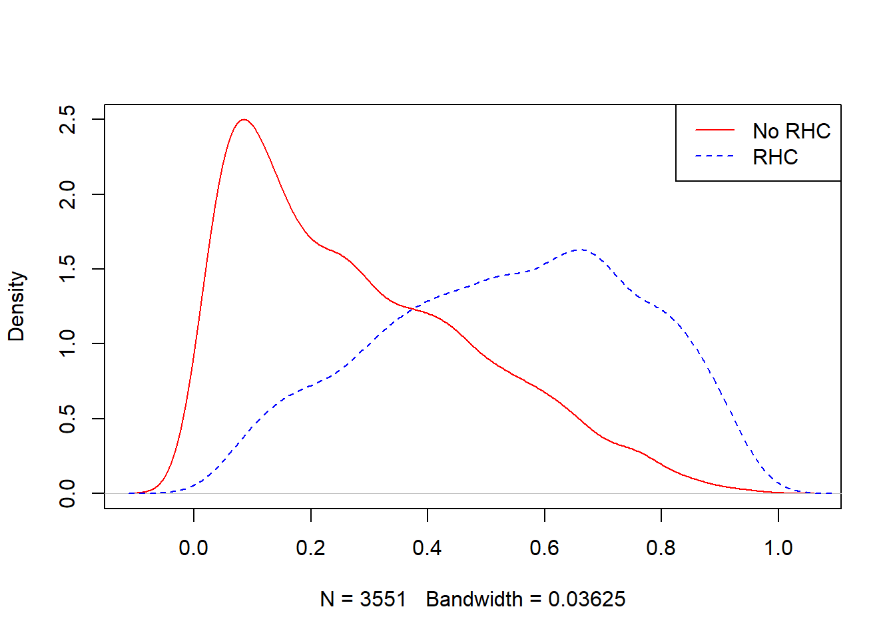
Step 2: Convert PS to IPW
- Convierta PS a IPW usando la fórmula. Usamos la fórmula para el efecto promedio del tratamiento (ATE).
ObsData$IPW <- ObsData$A/ObsData$PS + (1-ObsData$A)/(1-ObsData$PS)
summary(ObsData$IPW) Min. 1st Qu. Median Mean 3rd Qu. Max.
1.002 1.183 1.472 1.986 2.064 63.509 También es posible utilizar paquetes de software preempaquetados para hacer lo mismo:
require(WeightIt)Cargando paquete requerido: WeightItW.out <- weightit(ps.formula,
data = ObsData,
estimand = "ATE",
method = "ps")
summary(W.out$weights) Min. 1st Qu. Median Mean 3rd Qu. Max.
1.002 1.183 1.472 1.986 2.064 63.509 Paso 3: Evaluación del balance
Evaluar el equilibrio en la muestra ponderada
Podemos comprobar el saldo numéricamente.
Establecemos SMD = 0,1 como umbral para el equilibrio.
SMD>0,1 significa que no tenemos equilibrio
require(cobalt)
bal.tab(W.out, un = TRUE,
thresholds = c(m = .1))Balance Measures
Type Diff.Un Diff.Adj M.Threshold
prop.score Distance 1.1926 0.0224 Balanced, <0.1
Disease.category_ARF Binary -0.0290 0.0025 Balanced, <0.1
Disease.category_CHF Binary 0.0261 0.0008 Balanced, <0.1
Disease.category_Other Binary -0.1737 -0.0080 Balanced, <0.1
Disease.category_MOSF Binary 0.1766 0.0047 Balanced, <0.1
Cancer_None Binary 0.0439 0.0017 Balanced, <0.1
Cancer_Localized (Yes) Binary -0.0267 0.0017 Balanced, <0.1
Cancer_Metastatic Binary -0.0172 -0.0034 Balanced, <0.1
Cardiovascular Binary 0.0445 0.0051 Balanced, <0.1
Congestive.HF Binary 0.0268 0.0013 Balanced, <0.1
Dementia Binary -0.0472 -0.0138 Balanced, <0.1
Psychiatric Binary -0.0348 -0.0050 Balanced, <0.1
Pulmonary Binary -0.0737 -0.0058 Balanced, <0.1
Renal Binary 0.0066 0.0027 Balanced, <0.1
Hepatic Binary -0.0124 -0.0012 Balanced, <0.1
GI.Bleed Binary -0.0122 -0.0026 Balanced, <0.1
Tumor Binary -0.0423 -0.0016 Balanced, <0.1
Immunosupperssion Binary 0.0358 -0.0027 Balanced, <0.1
Transfer.hx Binary 0.0554 0.0047 Balanced, <0.1
MI Binary 0.0139 0.0005 Balanced, <0.1
age_[-Inf,50) Binary -0.0017 -0.0098 Balanced, <0.1
age_[50,60) Binary 0.0161 0.0149 Balanced, <0.1
age_[60,70) Binary 0.0355 -0.0108 Balanced, <0.1
age_[70,80) Binary 0.0144 0.0047 Balanced, <0.1
age_[80, Inf) Binary -0.0643 0.0010 Balanced, <0.1
sex_Female Binary -0.0462 -0.0143 Balanced, <0.1
edu Contin. 0.0914 -0.0000 Balanced, <0.1
DASIndex Contin. 0.0626 0.0435 Balanced, <0.1
APACHE.score Contin. 0.5014 0.0109 Balanced, <0.1
Glasgow.Coma.Score Contin. -0.1098 0.0034 Balanced, <0.1
blood.pressure Contin. -0.4551 0.0057 Balanced, <0.1
WBC Contin. 0.0836 0.0470 Balanced, <0.1
Heart.rate Contin. 0.1469 0.0210 Balanced, <0.1
Respiratory.rate Contin. -0.1655 0.0037 Balanced, <0.1
Temperature Contin. -0.0214 0.0090 Balanced, <0.1
PaO2vs.FIO2 Contin. -0.4332 -0.0016 Balanced, <0.1
Albumin Contin. -0.2299 -0.0279 Balanced, <0.1
Hematocrit Contin. -0.2693 -0.0247 Balanced, <0.1
Bilirubin Contin. 0.1446 -0.0069 Balanced, <0.1
Creatinine Contin. 0.2696 0.0148 Balanced, <0.1
Sodium Contin. -0.0922 -0.0059 Balanced, <0.1
Potassium Contin. -0.0271 -0.0264 Balanced, <0.1
PaCo2 Contin. -0.2486 -0.0201 Balanced, <0.1
PH Contin. -0.1198 0.0095 Balanced, <0.1
Weight Contin. 0.2557 0.0209 Balanced, <0.1
DNR.status_Yes Binary -0.0696 -0.0112 Balanced, <0.1
Medical.insurance_Medicaid Binary -0.0395 0.0058 Balanced, <0.1
Medical.insurance_Medicare Binary -0.0327 -0.0119 Balanced, <0.1
Medical.insurance_Medicare & Medicaid Binary -0.0144 -0.0001 Balanced, <0.1
Medical.insurance_No insurance Binary 0.0099 -0.0002 Balanced, <0.1
Medical.insurance_Private Binary 0.0624 0.0013 Balanced, <0.1
Medical.insurance_Private & Medicare Binary 0.0143 0.0052 Balanced, <0.1
Respiratory.Diag_Yes Binary -0.1277 -0.0056 Balanced, <0.1
Cardiovascular.Diag_Yes Binary 0.1395 0.0034 Balanced, <0.1
Neurological.Diag_Yes Binary -0.1079 -0.0038 Balanced, <0.1
Gastrointestinal.Diag_Yes Binary 0.0453 -0.0028 Balanced, <0.1
Renal.Diag_Yes Binary 0.0264 0.0021 Balanced, <0.1
Metabolic.Diag_Yes Binary -0.0059 0.0002 Balanced, <0.1
Hematologic.Diag_Yes Binary -0.0146 -0.0000 Balanced, <0.1
Sepsis.Diag_Yes Binary 0.0912 0.0035 Balanced, <0.1
Trauma.Diag_Yes Binary 0.0105 0.0011 Balanced, <0.1
Orthopedic.Diag_Yes Binary 0.0010 0.0002 Balanced, <0.1
race_white Binary 0.0063 -0.0030 Balanced, <0.1
race_black Binary -0.0114 0.0067 Balanced, <0.1
race_other Binary 0.0050 -0.0036 Balanced, <0.1
income_$11-$25k Binary 0.0062 -0.0096 Balanced, <0.1
income_$25-$50k Binary 0.0391 0.0032 Balanced, <0.1
income_> $50k Binary 0.0165 -0.0001 Balanced, <0.1
income_Under $11k Binary -0.0618 0.0065 Balanced, <0.1
Balance tally for mean differences
count
Balanced, <0.1 69
Not Balanced, >0.1 0
Variable with the greatest mean difference
Variable Diff.Adj M.Threshold
WBC 0.047 Balanced, <0.1
Effective sample sizes
Control Treated
Unadjusted 3551. 2184.
Adjusted 2532.46 1039.44love.plot(W.out, binary = "std",
thresholds = c(m = .1),
abs = TRUE,
var.order = "unadjusted",
line = TRUE)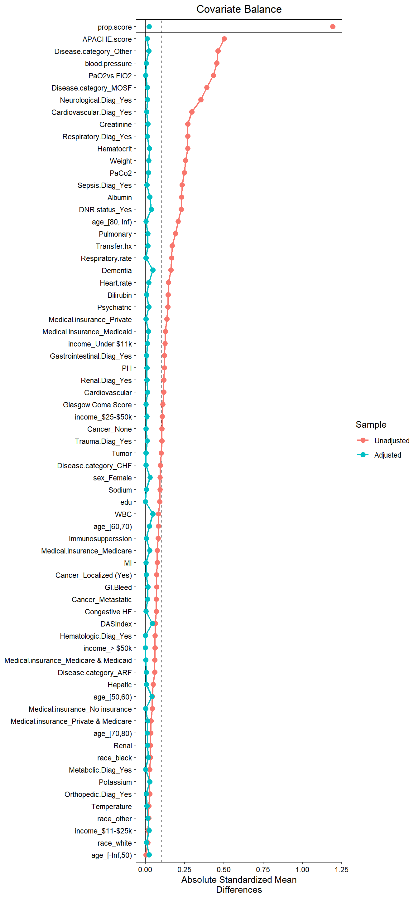
.fitted
¡Todas las covariables están equilibradas!
¿Crees que estamos frente a ingeniería inversa de un ensayo clínico aleatorio?
Paso 4: modelado de resultados
Estimar el efecto del tratamiento sobre los resultados
out.formula <- as.formula(Y ~ A)
out.fit <- lm(out.formula,
data = ObsData,
weights = IPW)
tbl_regression(out.fit,
estimate_fun = function(x) style_number(x, digits = 2),
pvalue_fun = function(x) style_pvalue(x, digits = 3))| Characteristic | Beta | 95% CI1 | p-value |
|---|---|---|---|
| A | 3.24 | 1.88, 4.60 | <0.001 |
| 1 CI = Confidence Interval | |||
IPTW using ML
De manera similar al cálculo G, intentaremos utilizar métodos de aprendizaje automático, en particular Superlearner, para estimar las estimaciones de IPW.
Pasos del IPTW desde SL
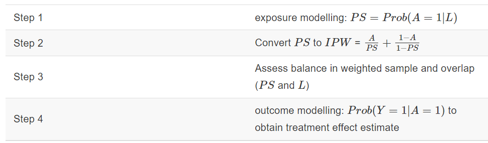
Step 1: exposure modelling
ObsData <- readRDS(file = "rhcAnalytic.RDS")
baselinevars <- names(dplyr::select(ObsData, !c(A,Y)))
ps.formulaA ~ Disease.category + Cancer + Cardiovascular + Congestive.HF +
Dementia + Psychiatric + Pulmonary + Renal + Hepatic + GI.Bleed +
Tumor + Immunosupperssion + Transfer.hx + MI + age + sex +
edu + DASIndex + APACHE.score + Glasgow.Coma.Score + blood.pressure +
WBC + Heart.rate + Respiratory.rate + Temperature + PaO2vs.FIO2 +
Albumin + Hematocrit + Bilirubin + Creatinine + Sodium +
Potassium + PaCo2 + PH + Weight + DNR.status + Medical.insurance +
Respiratory.Diag + Cardiovascular.Diag + Neurological.Diag +
Gastrointestinal.Diag + Renal.Diag + Metabolic.Diag + Hematologic.Diag +
Sepsis.Diag + Trauma.Diag + Orthopedic.Diag + race + incomeAjuste SuperLearner (SL) para estimar puntajes de propensión.
Utilizaremos:
Modelo lineal
LASSO
gradient boosting
require(SuperLearner)Cargando paquete requerido: SuperLearnerCargando paquete requerido: nnlsCargando paquete requerido: gamCargando paquete requerido: splinesCargando paquete requerido: foreachLoaded gam 1.22-3Super LearnerVersion: 2.0-29Package created on 2024-02-06require(xgboost)Cargando paquete requerido: xgboostWarning: package 'xgboost' was built under R version 4.4.1require(caret)Cargando paquete requerido: caretCargando paquete requerido: ggplot2Cargando paquete requerido: lattice
Adjuntando el paquete: 'lattice'The following object is masked from 'package:boot':
melanomarequire(glmnet)Cargando paquete requerido: glmnetCargando paquete requerido: MatrixLoaded glmnet 4.1-8set.seed(123)
ObsData.noYA <- dplyr::select(ObsData, !c(Y,A))
PS.fit.SL <- SuperLearner(Y=ObsData$A,
X=ObsData.noYA,
cvControl = list(V = 3),
SL.library=c("SL.glm", "SL.glmnet", "SL.xgboost"),
method="method.NNLS",
family="binomial")Aquí method.AUCtambién es posible utilizar en lugar de method.NNLSla respuesta binaria. Podríamos utilizar cvControl = list(V = 3, stratifyCV = TRUE)para que las divisiones se estratifiquen por la respuesta binaria.
Obtener los valores de la puntuación de propensión (PS) del ajuste
all.pred <- predict(PS.fit.SL, type = "response")
ObsData$PS.SL <- all.pred$pred
summary(ObsData$PS.SL) V1
Min. :0.003268
1st Qu.:0.152031
Median :0.344479
Mean :0.380833
3rd Qu.:0.592255
Max. :0.970376 hist(ObsData$PS.SL)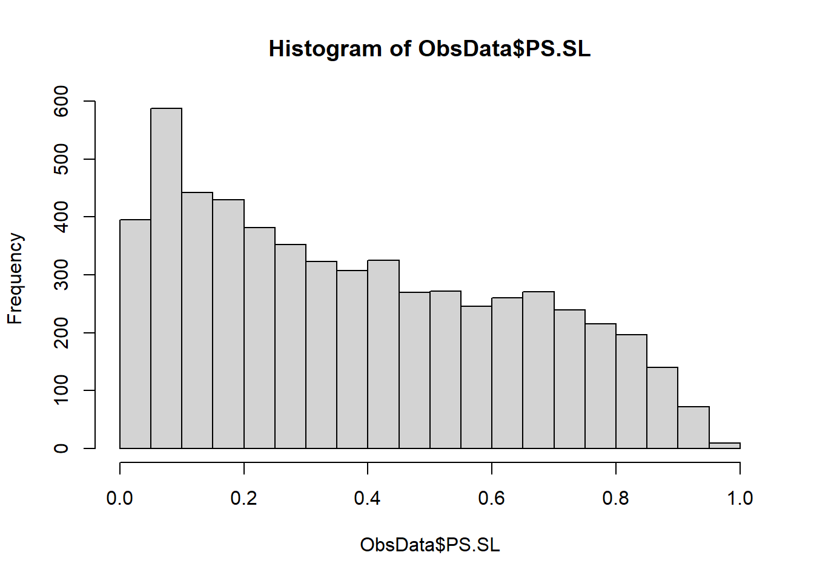
tapply(ObsData$PS.SL, ObsData$A, summary)$`0`
Min. 1st Qu. Median Mean 3rd Qu. Max.
0.003268 0.092336 0.191073 0.222071 0.328517 0.779936
$`1`
Min. 1st Qu. Median Mean 3rd Qu. Max.
0.08294 0.52010 0.65523 0.63897 0.76795 0.97038 plot(density(ObsData$PS.SL[ObsData$A==0]),
col = "red", main = "")
lines(density(ObsData$PS.SL[ObsData$A==1]),
col = "blue", lty = 2)
legend("topright", c("No RHC","RHC"),
col = c("red", "blue"), lty=1:2)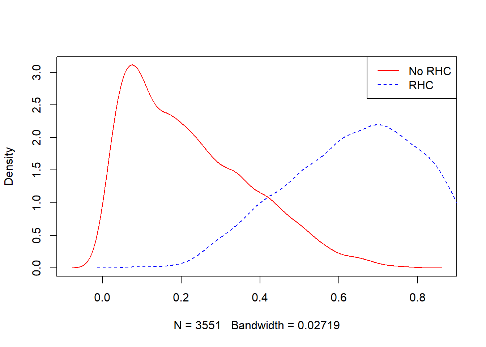
Step 2: Convert PS to IPW
# Manualmente
ObsData$IPW.SL <- ObsData$A/ObsData$PS.SL + (1-ObsData$A)/(1-ObsData$PS.SL)
summary(ObsData$IPW.SL) V1
Min. : 1.003
1st Qu.: 1.150
Median : 1.336
Mean : 1.494
3rd Qu.: 1.651
Max. :12.057 # Automatico
require(WeightIt)
W.out <- weightit(ps.formula,
data = ObsData,
estimand = "ATE",
method = "super",
SL.library = c("SL.glm",
"SL.glmnet",
"SL.xgboost"))
summary(W.out$weights)# Automatico usando modelo SL previamente realizado
W.out <- weightit(ps.formula,
data = ObsData,
estimand = "ATE",
ps = ObsData$PS.SL)
summary(W.out$weights) Min. 1st Qu. Median Mean 3rd Qu. Max.
1.003 1.150 1.336 1.494 1.651 12.057 Step 3: Balance checking
- We first check balance numerically for SMD = 0.1 as threshold for balance.
bal.tab(W.out, un = TRUE,
thresholds = c(m = .1))Balance Measures
Type Diff.Un Diff.Adj
prop.score Distance 2.5798 1.9777
Disease.category_ARF Binary -0.0290 -0.0101
Disease.category_CHF Binary 0.0261 0.0160
Disease.category_Other Binary -0.1737 -0.0959
Disease.category_MOSF Binary 0.1766 0.0900
Cancer_None Binary 0.0439 0.0263
Cancer_Localized (Yes) Binary -0.0267 -0.0151
Cancer_Metastatic Binary -0.0172 -0.0112
Cardiovascular Binary 0.0445 0.0278
Congestive.HF Binary 0.0268 0.0166
Dementia Binary -0.0472 -0.0308
Psychiatric Binary -0.0348 -0.0207
Pulmonary Binary -0.0737 -0.0406
Renal Binary 0.0066 0.0032
Hepatic Binary -0.0124 -0.0084
GI.Bleed Binary -0.0122 -0.0077
Tumor Binary -0.0423 -0.0241
Immunosupperssion Binary 0.0358 0.0204
Transfer.hx Binary 0.0554 0.0287
MI Binary 0.0139 0.0074
age_[-Inf,50) Binary -0.0017 -0.0061
age_[50,60) Binary 0.0161 0.0121
age_[60,70) Binary 0.0355 0.0166
age_[70,80) Binary 0.0144 0.0126
age_[80, Inf) Binary -0.0643 -0.0352
sex_Female Binary -0.0462 -0.0285
edu Contin. 0.0914 0.0484
DASIndex Contin. 0.0626 0.0395
APACHE.score Contin. 0.5014 0.2554
Glasgow.Coma.Score Contin. -0.1098 -0.0572
blood.pressure Contin. -0.4551 -0.2319
WBC Contin. 0.0836 0.0456
Heart.rate Contin. 0.1469 0.0808
Respiratory.rate Contin. -0.1655 -0.0785
Temperature Contin. -0.0214 -0.0084
PaO2vs.FIO2 Contin. -0.4332 -0.2295
Albumin Contin. -0.2299 -0.1251
Hematocrit Contin. -0.2693 -0.1542
Bilirubin Contin. 0.1446 0.0750
Creatinine Contin. 0.2696 0.1367
Sodium Contin. -0.0922 -0.0521
Potassium Contin. -0.0271 -0.0293
PaCo2 Contin. -0.2486 -0.1416
PH Contin. -0.1198 -0.0551
Weight Contin. 0.2557 0.1398
DNR.status_Yes Binary -0.0696 -0.0429
Medical.insurance_Medicaid Binary -0.0395 -0.0299
Medical.insurance_Medicare Binary -0.0327 -0.0150
Medical.insurance_Medicare & Medicaid Binary -0.0144 -0.0044
Medical.insurance_No insurance Binary 0.0099 0.0066
Medical.insurance_Private Binary 0.0624 0.0337
Medical.insurance_Private & Medicare Binary 0.0143 0.0090
Respiratory.Diag_Yes Binary -0.1277 -0.0646
Cardiovascular.Diag_Yes Binary 0.1395 0.0736
Neurological.Diag_Yes Binary -0.1079 -0.0582
Gastrointestinal.Diag_Yes Binary 0.0453 0.0240
Renal.Diag_Yes Binary 0.0264 0.0139
Metabolic.Diag_Yes Binary -0.0059 -0.0033
Hematologic.Diag_Yes Binary -0.0146 -0.0085
Sepsis.Diag_Yes Binary 0.0912 0.0467
Trauma.Diag_Yes Binary 0.0105 0.0061
Orthopedic.Diag_Yes Binary 0.0010 0.0007
race_white Binary 0.0063 0.0023
race_black Binary -0.0114 -0.0029
race_other Binary 0.0050 0.0006
income_$11-$25k Binary 0.0062 -0.0013
income_$25-$50k Binary 0.0391 0.0209
income_> $50k Binary 0.0165 0.0088
income_Under $11k Binary -0.0618 -0.0284
M.Threshold
prop.score
Disease.category_ARF Balanced, <0.1
Disease.category_CHF Balanced, <0.1
Disease.category_Other Balanced, <0.1
Disease.category_MOSF Balanced, <0.1
Cancer_None Balanced, <0.1
Cancer_Localized (Yes) Balanced, <0.1
Cancer_Metastatic Balanced, <0.1
Cardiovascular Balanced, <0.1
Congestive.HF Balanced, <0.1
Dementia Balanced, <0.1
Psychiatric Balanced, <0.1
Pulmonary Balanced, <0.1
Renal Balanced, <0.1
Hepatic Balanced, <0.1
GI.Bleed Balanced, <0.1
Tumor Balanced, <0.1
Immunosupperssion Balanced, <0.1
Transfer.hx Balanced, <0.1
MI Balanced, <0.1
age_[-Inf,50) Balanced, <0.1
age_[50,60) Balanced, <0.1
age_[60,70) Balanced, <0.1
age_[70,80) Balanced, <0.1
age_[80, Inf) Balanced, <0.1
sex_Female Balanced, <0.1
edu Balanced, <0.1
DASIndex Balanced, <0.1
APACHE.score Not Balanced, >0.1
Glasgow.Coma.Score Balanced, <0.1
blood.pressure Not Balanced, >0.1
WBC Balanced, <0.1
Heart.rate Balanced, <0.1
Respiratory.rate Balanced, <0.1
Temperature Balanced, <0.1
PaO2vs.FIO2 Not Balanced, >0.1
Albumin Not Balanced, >0.1
Hematocrit Not Balanced, >0.1
Bilirubin Balanced, <0.1
Creatinine Not Balanced, >0.1
Sodium Balanced, <0.1
Potassium Balanced, <0.1
PaCo2 Not Balanced, >0.1
PH Balanced, <0.1
Weight Not Balanced, >0.1
DNR.status_Yes Balanced, <0.1
Medical.insurance_Medicaid Balanced, <0.1
Medical.insurance_Medicare Balanced, <0.1
Medical.insurance_Medicare & Medicaid Balanced, <0.1
Medical.insurance_No insurance Balanced, <0.1
Medical.insurance_Private Balanced, <0.1
Medical.insurance_Private & Medicare Balanced, <0.1
Respiratory.Diag_Yes Balanced, <0.1
Cardiovascular.Diag_Yes Balanced, <0.1
Neurological.Diag_Yes Balanced, <0.1
Gastrointestinal.Diag_Yes Balanced, <0.1
Renal.Diag_Yes Balanced, <0.1
Metabolic.Diag_Yes Balanced, <0.1
Hematologic.Diag_Yes Balanced, <0.1
Sepsis.Diag_Yes Balanced, <0.1
Trauma.Diag_Yes Balanced, <0.1
Orthopedic.Diag_Yes Balanced, <0.1
race_white Balanced, <0.1
race_black Balanced, <0.1
race_other Balanced, <0.1
income_$11-$25k Balanced, <0.1
income_$25-$50k Balanced, <0.1
income_> $50k Balanced, <0.1
income_Under $11k Balanced, <0.1
Balance tally for mean differences
count
Balanced, <0.1 60
Not Balanced, >0.1 8
Variable with the greatest mean difference
Variable Diff.Adj M.Threshold
APACHE.score 0.2554 Not Balanced, >0.1
Effective sample sizes
Control Treated
Unadjusted 3551. 2184.
Adjusted 3307.41 1878.38love.plot(W.out, binary = "std",
thresholds = c(m = .1),
abs = TRUE,
var.order = "unadjusted",
line = TRUE)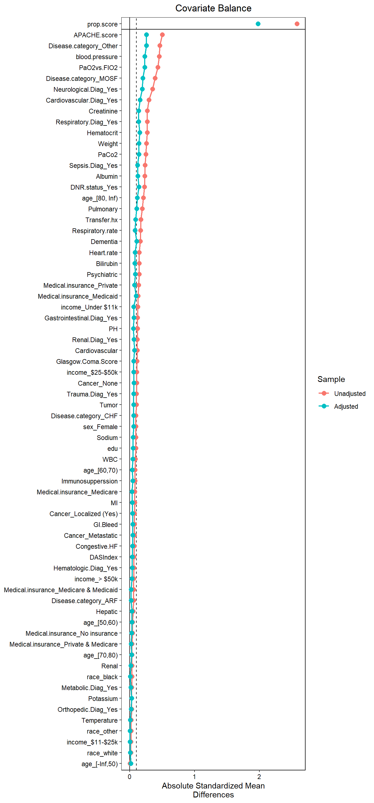
Algunas covariables tienen SMD > 0,1 (signo de desequilibrio). Este fenómeno es común cuando utilizamos métodos de aprendizaje automático fuertes para obtener PS
Paso 4: modelado de resultados
Estimar el efecto del tratamiento sobre los resultados
out.formula <- as.formula(Y ~ A)
out.fit <- glm(out.formula,
data = ObsData,
weights = IPW.SL)
tbl_regression(out.fit,
include = c(A),
estimate_fun = function(x) style_number(x, digits = 2),
pvalue_fun = function(x) style_pvalue(x, digits = 3))| Characteristic | Beta | 95% CI1 | p-value |
|---|---|---|---|
| A | 4.28 | 2.92, 5.65 | <0.001 |
| 1 CI = Confidence Interval | |||
NOTA: Ajuste de todas las covariables para abordar posibles factores de confusión residuales (como lo indicó el desequilibrio). Alternativamente, se podría ajustar para covariables seleccionadas que se cree que son las razones del desequilibrio potencial
out.formula2 <- as.formula(paste("Y~ A +",
paste(baselinevars,
collapse = "+")))
out.fit2 <- glm(out.formula2,
data = ObsData,
weights = IPW.SL)
tbl_regression(out.fit2,
include = c(A),
estimate_fun = function(x) style_number(x, digits = 2),
pvalue_fun = function(x) style_pvalue(x, digits = 3))| Characteristic | Beta | 95% CI1 | p-value |
|---|---|---|---|
| A | 2.91 | 1.53, 4.30 | <0.001 |
| 1 CI = Confidence Interval | |||
TMLE
Hablemos de los estimadores doblemente robustos (DR). Los DR tienen varias propiedades importantes:
Utilizan información de ambos
La exposición y
Los modelos de resultados.
Proporcionan un estimador consistente si cualquiera de los modelos mencionados anteriormente se especifica correctamente.
- Estimador consistente significa que a medida que aumenta el tamaño de la muestra, la distribución de las estimaciones se concentra cerca del parámetro verdadero.
Proporcionan un estimador eficiente si tanto el modelo de exposición como el de resultados se especifican correctamente.
- estimador eficiente significa que las estimaciones se aproximan al parámetro verdadero en términos de una función de pérdida elegida (por ejemplo, podría ser RMSE).
(Estimación de máxima verosimilitud dirigida)
La estimación de máxima verosimilitud dirigida (TMLE) es un método de DR que utiliza
una estimación inicial del modelo de resultados (computación G)
El modelo de puntuación de propensión (exposición) mejorado.
Además de ser DR, TMLE tiene otras propiedades deseables:
Permite el uso de algoritmos adaptativos de datos como el aprendizaje automático sin sacrificar la interpretabilidad.
ML sólo se utiliza en pasos intermedios para desarrollar el estimador, por lo que la optimización e interpretación del estimador en su conjunto permanecen intactas.
El uso del aprendizaje automático puede ayudar a mitigar la especificación incorrecta del modelo.
Se ha demostrado que supera a otros métodos, particularmente en entornos con datos dispersos .
Steps
Según Luque-Fernandez et al. ( 2018 ) , necesitamos los siguientes pasos (2-7) para obtener estimaciones puntuales cuando trabajamos con resultados binarios. Pero como trabajamos con resultados continuos, necesitamos un paso de transformación adicional al principio y también al final.
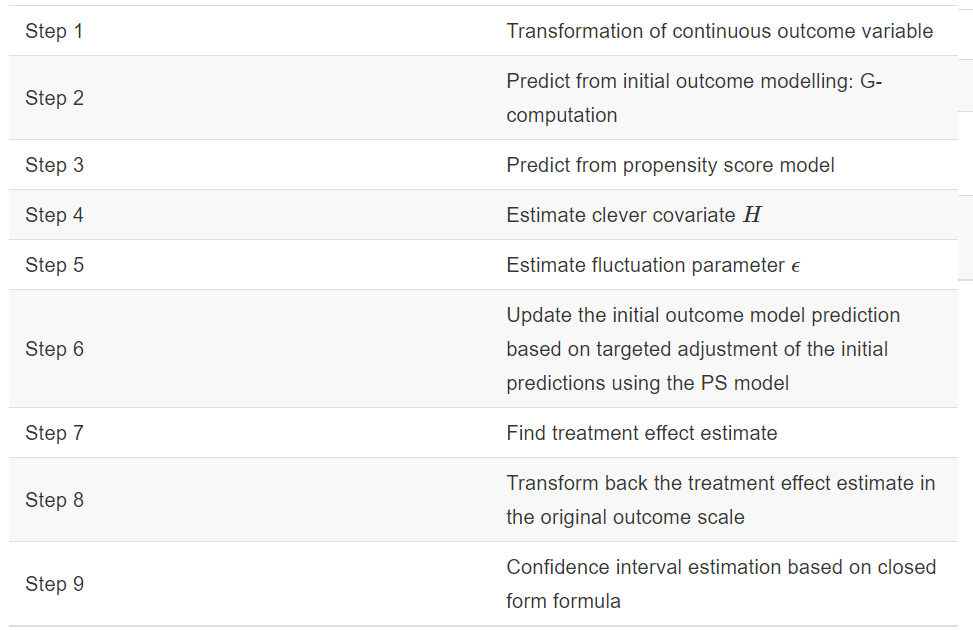
Paso 1: Transformación de Y
En nuestro ejemplo, el desenlace es continuo.
ObsData <- readRDS(file = "rhcAnalytic.RDS")
baselinevars <- names(dplyr::select(ObsData, !c(A,Y)))
summary(ObsData$Y) Min. 1st Qu. Median Mean 3rd Qu. Max.
2.00 7.00 14.00 21.56 25.00 394.00 plot(density(ObsData$Y), main = "Observed Y")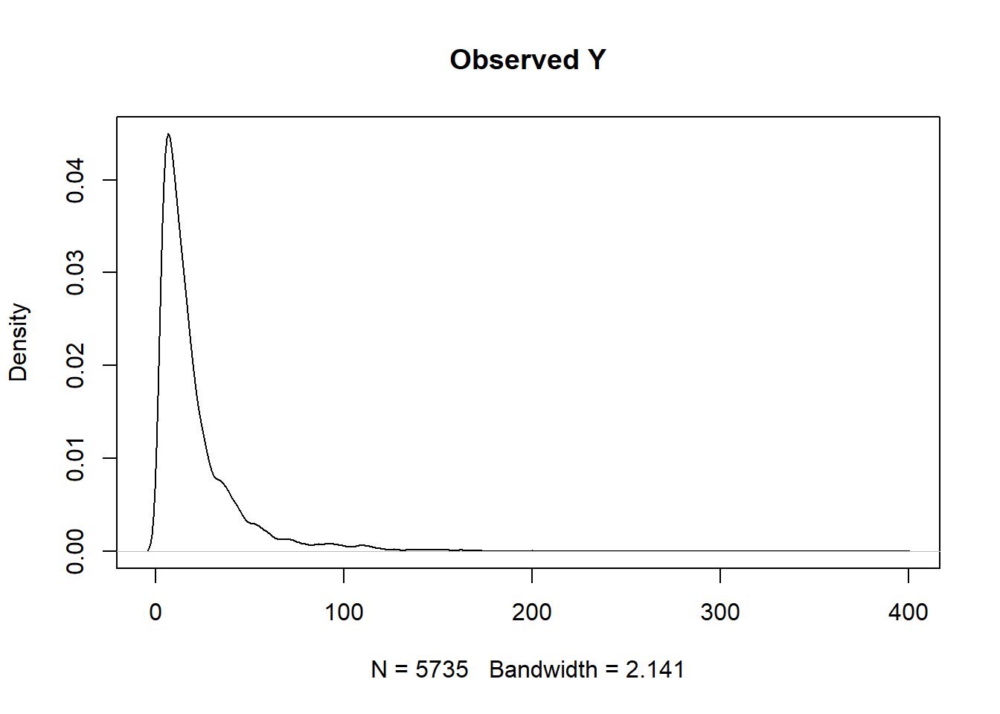
La recomendación general es transformar el resultado continuo para que esté dentro del rango [0,1] ( Susan Gruber y Laan 2010 ) .
min.Y <- min(ObsData$Y)
max.Y <- max(ObsData$Y)
ObsData$Y.bounded <- (ObsData$Y-min.Y)/(max.Y-min.Y)Compruebe el rango de nuestra variable de resultado transformada
summary(ObsData$Y.bounded) Min. 1st Qu. Median Mean 3rd Qu. Max.
0.00000 0.01276 0.03061 0.04990 0.05867 1.00000 Paso 2: Estimación inicial de G-comp
Construimos nuestro modelo de resultados y hacemos nuestras predicciones iniciales.
Para este paso, utilizaremos SuperLearner . Esto no requiere suposiciones a priori sobre la estructura de nuestro modelo de resultados.
library(SuperLearner)
set.seed(123)
ObsData.noY <- dplyr::select(ObsData, !c(Y,Y.bounded))
Y.fit.sl <- SuperLearner(Y=ObsData$Y.bounded,
X=ObsData.noY,
cvControl = list(V = 3),
SL.library=c("SL.glm",
"SL.glmnet",
"SL.xgboost"),
method="method.CC_nloglik",
family="gaussian")Cargando paquete requerido: nloptrObsData$init.Pred <- predict(Y.fit.sl, newdata = ObsData.noY,
type = "response")$pred
summary(ObsData$init.Pred) V1
Min. :0.00100
1st Qu.:0.03723
Median :0.04948
Mean :0.04877
3rd Qu.:0.06067
Max. :0.13659 - Utilizaremos estos valores de predicción iniciales más adelante.
\(Q^0(A,L)\) Se utiliza a menudo para representar las predicciones del modelo G-comp inicial.
Obtener predicciones bajo ambos tratamientos A=0 y A=1
Podríamos estimar el efecto del tratamiento a partir de este modelo inicial.
Necesitaremos el \(Q^0(A=1,L)\) y \(Q^0(A=0,L)\)predicciones más tarde.
\(Q^0(A=1,L)\) predicciones:
ObsData.noY$A <- 1
ObsData$Pred.Y1 <- predict(Y.fit.sl, newdata = ObsData.noY,
type = "response")$pred
summary(ObsData$Pred.Y1) V1
Min. :0.00100
1st Qu.:0.04240
Median :0.05429
Mean :0.05322
3rd Qu.:0.06446
Max. :0.13659 - \(Q^0(A=0,L)\) predicciones:
ObsData.noY$A <- 0
ObsData$Pred.Y0 <- predict(Y.fit.sl, newdata = ObsData.noY,
type = "response")$pred
summary(ObsData$Pred.Y0) V1
Min. :0.00100
1st Qu.:0.03524
Median :0.04708
Mean :0.04609
3rd Qu.:0.05734
Max. :0.12652 Obtener una estimación del efecto inicial del tratamiento
ObsData$Pred.TE <- ObsData$Pred.Y1 - ObsData$Pred.Y0
summary(ObsData$Pred.TE) V1
Min. :-0.010333
1st Qu.: 0.006682
Median : 0.007071
Mean : 0.007134
3rd Qu.: 0.007541
Max. : 0.021592 Paso 3: Modelo PS
En este punto, tenemos nuestra estimación inicial y ahora queremos realizar nuestra mejora específica.
library(SuperLearner)
set.seed(124)
ObsData.noYA <- dplyr::select(ObsData, !c(Y,Y.bounded,
A,init.Pred,
Pred.Y1,Pred.Y0,
Pred.TE))
PS.fit.SL <- SuperLearner(Y=ObsData$A,
X=ObsData.noYA,
cvControl = list(V = 3),
SL.library=c("SL.glm",
"SL.glmnet",
"SL.xgboost"),
method="method.CC_nloglik",
family="binomial")
all.pred <- predict(PS.fit.SL, type = "response")
ObsData$PS.SL <- all.pred$pred Estas predicciones de puntuación de propensión ( PS.SL) se representan como \(g(A_i=1|L_i)\).
Podemos estimar \(g(A_i=0|L_i)\) así como \(1 - g(A_i=0|L_i)\) o 1 - PS.SL
summary(ObsData$PS.SL) V1
Min. :0.002806
1st Qu.:0.133409
Median :0.329181
Mean :0.375143
3rd Qu.:0.596584
Max. :0.983057 tapply(ObsData$PS.SL, ObsData$A, summary)$`0`
Min. 1st Qu. Median Mean 3rd Qu. Max.
0.002806 0.079637 0.177020 0.219962 0.327519 0.866585
$`1`
Min. 1st Qu. Median Mean 3rd Qu. Max.
0.03745 0.49045 0.65384 0.62745 0.78263 0.98306 plot(density(ObsData$PS.SL[ObsData$A==0]),
col = "red", main = "")
lines(density(ObsData$PS.SL[ObsData$A==1]),
col = "blue", lty = 2)
legend("topright", c("No RHC","RHC"),
col = c("red", "blue"), lty=1:2) 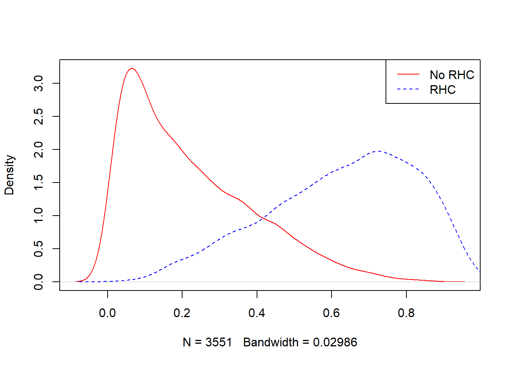
Paso 4: Estimación H
Covariable inteligente:
\(H(A_i, L_i) = \frac{I(A_i=1)}{g(A_i=1|L_i)} - \frac{I(A_i=0)}{g(A_i=0|L_i)}\)
ObsData$H.A1L <- (ObsData$A) / ObsData$PS.SL
ObsData$H.A0L <- (1-ObsData$A) / (1- ObsData$PS.SL)
t(apply(cbind(-ObsData$H.A0L,ObsData$H.A1L),
2, summary)) Min. 1st Qu. Median Mean 3rd Qu. Max.
[1,] -7.495401 -1.292187 -1.065943 -0.8527551 0.000000 0.00000
[2,] 0.000000 0.000000 0.000000 0.7150033 1.366217 26.70171ObsData$H.AL <- ObsData$H.A1L - ObsData$H.A0L
summary(ObsData$H.AL) V1
Min. :-7.4954
1st Qu.:-1.2922
Median :-1.0659
Mean :-0.1378
3rd Qu.: 1.3662
Max. :26.7017 tapply(ObsData$H.AL, ObsData$A, summary)$`0`
Min. 1st Qu. Median Mean 3rd Qu. Max.
-7.495 -1.487 -1.215 -1.377 -1.087 -1.003
$`1`
Min. 1st Qu. Median Mean 3rd Qu. Max.
1.017 1.278 1.529 1.878 2.039 26.702 Los componentes covariables inteligentes agregados o individuales muestran ligeras diferencias en sus resúmenes.
Paso 5: Estimación \(\epsilon\)
Parámetro de fluctuación \(\epsilon\), que representa qué tan grande será el ajuste que haremos a la estimación inicial.
El parámetro de fluctuación \(\hat\epsilon\) podría ser
un escalar o
un vector con 2 componentes \(\hat\epsilon_0\) y \(\hat\epsilon_1\).
Se estima a través de MLE, utilizando un modelo con un desplazamiento basado en la estimación inicial y covariables inteligentes como variables independientes (Susan Gruber y Van Der Laan 2009):
\[E(Y|A,L)(\epsilon) = \frac{1}{1+\exp(-\log\frac{\bar Q^0(A,L)}{(1-\bar Q^0(A,L))}-\epsilon \times H(A,L))}\]
\(\hat\epsilon = \hat\epsilon_0\) y \(\hat\epsilon_1\)
Esto se acerca más a cómo tmleel paquete implementa covariables inteligentes.
eps_mod <- glm(Y.bounded ~ -1 + H.A1L + H.A0L +
offset(qlogis(init.Pred)),
family = "binomial",
data = ObsData)Warning in eval(family$initialize): non-integer #successes in a binomial glm!epsilon <- coef(eps_mod)
epsilon["H.A1L"] H.A1L
0.01568808 epsilon["H.A0L"] H.A0L
0.02070037 Tenga en cuenta que, si init.Predincluye valores negativos, NaNsse producirían después de aplicar qlogis()
Únicamente 1 \(\hat\epsilon\)
Para fines de demostración
eps_mod1 <- glm(Y.bounded ~ -1 + H.AL +
offset(qlogis(init.Pred)),
family = "binomial",
data = ObsData)Warning in eval(family$initialize): non-integer #successes in a binomial glm!epsilon1 <- coef(eps_mod1)
epsilon1 H.AL
0.001845536 Una alternativa podría ser utilizar pesos (weights).
Paso 6: Actualizar
\(\hat\epsilon = \hat\epsilon_0\) y \(\hat\epsilon_1\)
Podemos utilizar epsilon["H.A1L"]y epsilon["H.A0L"]para actualizar
ObsData$Pred.Y1.update <- plogis(qlogis(ObsData$Pred.Y1) +
epsilon["H.A1L"]*ObsData$H.A1L)
ObsData$Pred.Y0.update <- plogis(qlogis(ObsData$Pred.Y0) +
epsilon["H.A0L"]*ObsData$H.A0L)
summary(ObsData$Pred.Y1.update) V1
Min. :0.001031
1st Qu.:0.042745
Median :0.054882
Mean :0.053810
3rd Qu.:0.065188
Max. :0.139189 summary(ObsData$Pred.Y0.update) V1
Min. :0.00100
1st Qu.:0.03603
Median :0.04779
Mean :0.04686
3rd Qu.:0.05809
Max. :0.12652 Únicamente 1 \(\hat\epsilon\)
Alternativamente, podríamos utilizar epsilonto from H.ALpara actualizar
ObsData$Pred.Y1.update1 <- plogis(qlogis(ObsData$Pred.Y1) +
epsilon1*ObsData$H.AL)
ObsData$Pred.Y0.update1 <- plogis(qlogis(ObsData$Pred.Y0) +
epsilon1*ObsData$H.AL)
summary(ObsData$Pred.Y1.update1) V1
Min. :0.001004
1st Qu.:0.042323
Median :0.054282
Mean :0.053210
3rd Qu.:0.064424
Max. :0.136895 summary(ObsData$Pred.Y0.update1) V1
Min. :0.001004
1st Qu.:0.035254
Median :0.047066
Mean :0.046077
3rd Qu.:0.057296
Max. :0.126804 Tenga en cuenta que, si Pred.Y1y Pred.Y0incluyen valores negativos, NaNsse producirían después de aplicar qlogis().
Paso 7: Estimación del efecto
Ahora que se han calculado las predicciones actualizadas de nuestros modelos de resultados, podemos calcular el ATE.
ATE.TMLE.bounded.vector <- ObsData$Pred.Y1.update -
ObsData$Pred.Y0.update
summary(ATE.TMLE.bounded.vector) V1
Min. :-0.011371
1st Qu.: 0.005740
Median : 0.006569
Mean : 0.006954
3rd Qu.: 0.008228
Max. : 0.031895 ATE.TMLE.bounded <- mean(ATE.TMLE.bounded.vector,
na.rm = TRUE)
ATE.TMLE.bounded [1] 0.006953925Únicamente 1 \(\hat\epsilon\)
Alternativamente, utilice H.AL:
ATE.TMLE.bounded.vector1 <- ObsData$Pred.Y1.update1 -
ObsData$Pred.Y0.update1
summary(ATE.TMLE.bounded.vector1) V1
Min. :-0.010315
1st Qu.: 0.006681
Median : 0.007066
Mean : 0.007133
3rd Qu.: 0.007540
Max. : 0.021637 ATE.TMLE.bounded1 <- mean(ATE.TMLE.bounded.vector1,
na.rm = TRUE)
ATE.TMLE.bounded1 [1] 0.007132696Paso 8: Estimación del efecto de reescalado
Nos aseguramos de transformarnos nuevamente a nuestra escala original.
ATE.TMLE <- (max.Y-min.Y)*ATE.TMLE.bounded
ATE.TMLE [1] 2.725938Únicamente 1 \(\hat\epsilon\)
Alternativamente, utilice H.AL:
ATE.TMLE1 <- (max.Y-min.Y)*ATE.TMLE.bounded1
ATE.TMLE1 [1] 2.796017Paso 9: Estimación del intervalo de confianza
- Dado que los algoritmos de aprendizaje automático se utilizaron solo en pasos intermedios, en lugar de estimar directamente nuestro parámetro de interés, los intervalos de confianza del 95% se pueden calcular directamente ( Luque-Fernandez et al. 2018 ) .
Basándose en la teoría semiparamétrica, ya se ha derivado la fórmula de varianza de forma cerrada ( Laan y Petersen 2012 ) .
- No es necesario el procedimiento de arranque que consume mucho tiempo.
ci.estimate <- function(data = ObsData, H.AL.components = 1){
min.Y <- min(data$Y)
max.Y <- max(data$Y)
# transform predicted outcomes back to original scale
if (H.AL.components == 2){
data$Pred.Y1.update.rescaled <-
(max.Y- min.Y)*data$Pred.Y1.update + min.Y
data$Pred.Y0.update.rescaled <-
(max.Y- min.Y)*data$Pred.Y0.update + min.Y
}
if (H.AL.components == 1) {
data$Pred.Y1.update.rescaled <-
(max.Y- min.Y)*data$Pred.Y1.update1 + min.Y
data$Pred.Y0.update.rescaled <-
(max.Y- min.Y)*data$Pred.Y0.update1 + min.Y
}
EY1_TMLE1 <- mean(data$Pred.Y1.update.rescaled,
na.rm = TRUE)
EY0_TMLE1 <- mean(data$Pred.Y0.update.rescaled,
na.rm = TRUE)
# ATE efficient influence curve
D1 <- data$A/data$PS.SL*
(data$Y - data$Pred.Y1.update.rescaled) +
data$Pred.Y1.update.rescaled - EY1_TMLE1
D0 <- (1 - data$A)/(1 - data$PS.SL)*
(data$Y - data$Pred.Y0.update.rescaled) +
data$Pred.Y0.update.rescaled - EY0_TMLE1
EIC <- D1 - D0
# ATE variance
n <- nrow(data)
varHat.IC <- var(EIC, na.rm = TRUE)/n
# ATE 95% CI
if (H.AL.components == 2) {
ATE.TMLE.CI <- c(ATE.TMLE - 1.96*sqrt(varHat.IC),
ATE.TMLE + 1.96*sqrt(varHat.IC))
}
if (H.AL.components == 1) {
ATE.TMLE.CI <- c(ATE.TMLE1 - 1.96*sqrt(varHat.IC),
ATE.TMLE1 + 1.96*sqrt(varHat.IC))
}
return(ATE.TMLE.CI)
}CI2 <- ci.estimate(data = ObsData, H.AL.components = 2)
CI2[1] 1.585187 3.866689CI1 <- ci.estimate(data = ObsData, H.AL.components = 1)
CI1[1] 1.654637 3.937396Referencias
Gruber, Susan, and Mark J van der Laan. 2010. “A Targeted Maximum Likelihood Estimator of a Causal Effect on a Bounded Continuous Outcome.” The International Journal of Biostatistics 6 (1).
Gruber, Susan, and Mark J Van Der Laan. 2009. “Targeted Maximum Likelihood Estimation: A Gentle Introduction.”
Laan, Mark J van der, and Maya L Petersen. 2012. Targeted Learning. NY: Springer.
Luque-Fernandez, Miguel Angel, Michael Schomaker, Bernard Rachet, and Mireille E Schnitzer. 2018. “Targeted Maximum Likelihood Estimation for a Binary Treatment: A Tutorial.” Statistics in Medicine 37 (16): 2530–46.
TMLE
El paquete tmle puede manejar
tanto desenlaces binarios como
continuos y
utiliza el paquete SuperLearner para construir ambos modelos tal como lo hicimos en los pasos anteriores.
La biblioteca SuperLearner predeterminada para estimar el resultado incluye ( S. Gruber, Van Der Laan y Kennedy 2020 )
SL.glm:modelos lineales generalizados (GLM)SL.glmnet:LASSOtmle.SL.dbarts2:modelado y predicción utilizando BART
La biblioteca predeterminada para estimar los puntajes de propensión incluye
SL.glm:modelos lineales generalizados (GLM)tmle.SL.dbarts.k.5:Envoltorios SL para modelado y predicción utilizando BARTSL.gam:modelos aditivos generalizados: (GAMs)
Ciertamente es posible utilizar diferentes conjuntos de estudiantes.
Se pueden agregar más métodos mediante
especificar listas de modelos en la biblioteca Q.SL.library (para el modelo de resultado) y
Argumentos de la biblioteca g.SL.library (para el modelo de puntuación de propensión).
Obsérvese también que el resultadoYYse requiere estar dentro del rango de[0,1][0,1]También para este método,
- Entonces necesitamos pasar los datos transformados y luego transformar nuevamente la estimación.
set.seed(1444)
ObsData <- readRDS(file = "rhcAnalytic.RDS")
baselinevars <- names(dplyr::select(ObsData, !c(A,Y)))
# transform the outcome to fall within the range [0,1]
min.Y <- min(ObsData$Y)
max.Y <- max(ObsData$Y)
ObsData$Y_transf <- (ObsData$Y-min.Y)/(max.Y-min.Y)
# run tmle from the tmle package
ObsData.noYA <- dplyr::select(ObsData,
!c(Y_transf, Y, A))
SL.library = c("SL.glm",
"SL.glmnet",
"SL.xgboost")
tmle.fit <- tmle::tmle(Y = ObsData$Y_transf,
A = ObsData$A,
W = ObsData.noYA,
family = "gaussian",
#V = 3,
Q.SL.library = SL.library,
g.SL.library = SL.library)
tmle.fit Marginal mean under treatment (EY1)
Parameter Estimate: 0.054742
Estimated Variance: 1.1796e-06
p-value: <2e-16
95% Conf Interval: (0.052613, 0.056871)
Marginal mean under comparator (EY0)
Parameter Estimate: 0.047292
Estimated Variance: 8.5463e-07
p-value: <2e-16
95% Conf Interval: (0.04548, 0.049104)
Additive Effect
Parameter Estimate: 0.0074495
Estimated Variance: 1.9398e-06
p-value: 8.8602e-08
95% Conf Interval: (0.0047197, 0.010179)
Additive Effect among the Treated
Parameter Estimate: 0.044029
Estimated Variance: 3.6966e-06
p-value: <2e-16
95% Conf Interval: (0.040261, 0.047798)
Additive Effect among the Controls
Parameter Estimate: 0.66382
Estimated Variance: 4.2047e-05
p-value: <2e-16
95% Conf Interval: (0.65111, 0.67653)summary(tmle.fit) Initial estimation of Q
Procedure: cv-SuperLearner, ensemble
Model:
Y ~ SL.glm_All + SL.glmnet_All + SL.xgboost_All
Coefficients:
SL.glm_All 0.3911735
SL.glmnet_All 0.4121464
SL.xgboost_All 0.1966801
Cross-validated R squared : 0.0638
Estimation of g (treatment mechanism)
Procedure: SuperLearner, ensemble
Model:
A ~ SL.glm_All + SL.glmnet_All + SL.xgboost_All
Coefficients:
SL.glm_All 0.5073113
SL.glmnet_All 0.09327121
SL.xgboost_All 0.3994175
Estimation of g.Z (intermediate variable assignment mechanism)
Procedure: No intermediate variable
Estimation of g.Delta (missingness mechanism)
Procedure: No missingness, ensemble
Bounds on g: (0.0076, 1)
Bounds on g for ATT/ATC: (0.0076, 0.9924)
Marginal Mean under Treatment (EY1)
Parameter Estimate: 0.054742
Estimated Variance: 1.1796e-06
p-value: <2e-16
95% Conf Interval: (0.052613, 0.056871)
Marginal Mean under Comparator (EY0)
Parameter Estimate: 0.047292
Estimated Variance: 8.5463e-07
p-value: <2e-16
95% Conf Interval: (0.04548, 0.049104)
Additive Effect
Parameter Estimate: 0.0074495
Estimated Variance: 1.9398e-06
p-value: 8.8602e-08
95% Conf Interval: (0.0047197, 0.010179)
Additive Effect among the Treated
Parameter Estimate: 0.044029
Estimated Variance: 3.6966e-06
p-value: <2e-16
95% Conf Interval: (0.040261, 0.047798)
Additive Effect among the Controls
Parameter Estimate: 0.66382
Estimated Variance: 4.2047e-05
p-value: <2e-16
95% Conf Interval: (0.65111, 0.67653)tmle_est_tr <- tmle.fit$estimates$ATE$psi
tmle_est_tr[1] 0.00744953# transform back the ATE estimate
tmle_est <- (max.Y-min.Y)*tmle_est_tr
tmle_est[1] 2.920216tmle.ci <- (max.Y-min.Y)*tmle.fit$estimates$ATE$CI
tmle.ci[1] 1.850134 3.990298RHC comparación de resultados
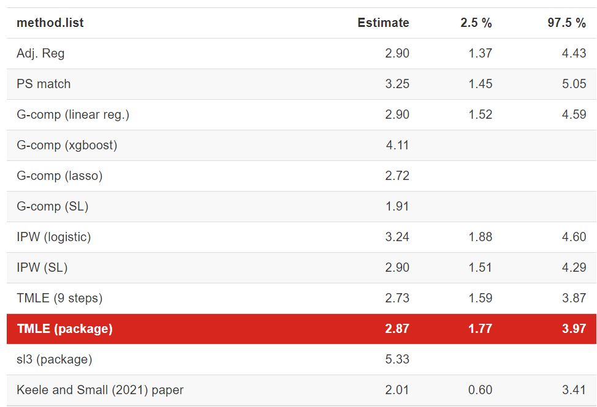
Keele y Small ( 2021 ) utilizaron TMLE-SL basándose en un conjunto de tres SL diferentes: (1) GLM, (2) bosques aleatorios y (3) LASSO.
Otros paquetes
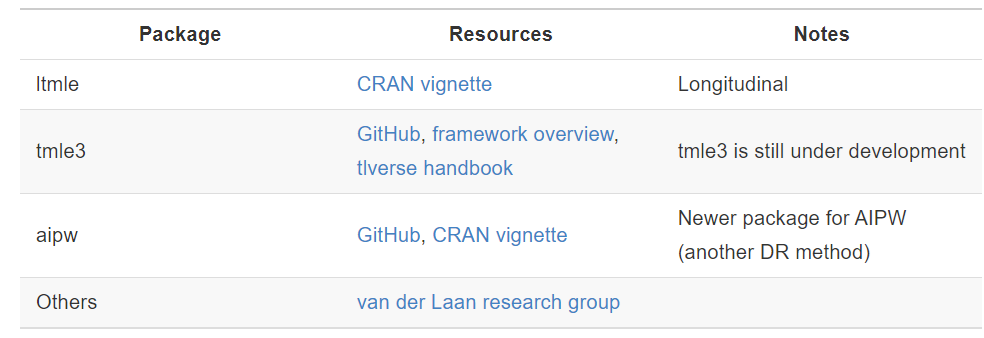